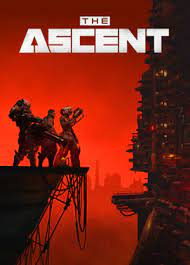

Jogos finalizados em 2023
The Ascent
The Ascent é um videogame de RPG de ação com tema cyberpunk desenvolvido pelo estúdio de jogos indie sueco Neon Giant e publicado pela Curve Digital para Microsoft Windows, Xbox Series X/S e Xbox One em 29 de julho de 2021